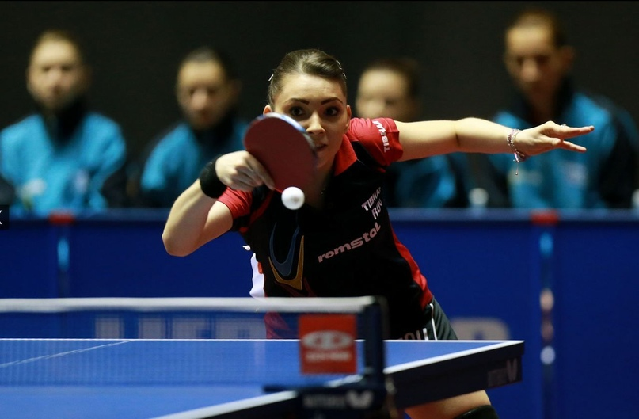

Сайт разработан с целью привлечения людей к здоровому образу жизни
Настольный теннис — олимпийский вид спорта, спортивная игра с мячом, в которой используют специальные ракетки и игровой стол, разграниченный сеткой пополам.
Игра проходит между двумя игроками либо между двумя парами игроков. Игроки или пары стоят за столом напротив друг друга. С подачи открывается розыгрыш очка, и мяч должен быть отбит на игровую половину противника таким образом, чтобы сделать невозможным ответный удар.
Каждый розыгрыш мяча заканчивается присвоением одного очка одному или другому игроку (команде). По современным международным правилам, установленным в 2001 году, каждая партия продолжается до 11 очков. Матч состоит из нечётного количества партий (обычно пяти или семи), матч играют на большинство побед в партиях.
Основные правила
Определения
«Розыгрыш»
— период времени, когда мяч находится в игре
«Мяч в игре»
считается с последнего момента нахождения его на неподвижной ладони свободной кисти перед намеренным подбрасыванием его в подаче до тех пор, пока не будет решено, что розыгрыш следует переиграть или он завершён присуждением очка
«Переигровка»
— розыгрыш, результат которого не засчитан
«Очко»
— розыгрыш, результат которого засчитан
Игрок «ударяет» мяч
, если он касается мяча в игре своей ракеткой, держа её в руке, или своей рукой с ракеткой ниже запястья
«Подающий»
— игрок, который должен первым ударить по мячу в розыгрыше
«Принимающий»
— игрок, который должен вторым ударить по мячу в розыгрыше
Когда происходит "Переподача" и что это такое?
Если мяч зацепил при подаче сетку, но при этом все остальные правила были соблюдены, проводится «переподача» — подающий должен повторить подачу. Количество переподач не ограничено. Также переигровка может быть назначена ещё в ряде случаев, определённых правилами.
Как правильно осуществить возврат мяча противнику?
Поданный или возвращённый мяч следует ударить так, чтобы он коснулся половины стола соперника — сразу или после касания комплекта сетки.

В каких случаях будет присвоено очко?
соперник не выполнил правильную подачу
соперник не выполнил правильный возврат
после правильно выполненной подачи или возврата мяч до удара соперника коснётся чего-либо, кроме комплекта сетки
мяч пролетит над игровой поверхностью стороны стола данного игрока или за концевую линию игровой поверхности стороны стола данного игрока, не коснувшись её, после того, как соперник ударил по мячу
соперник мешает мячу (он или что-либо из того, что надето на сопернике или что соперник имеет при себе, касается мяча в игре, летящего над или в направлении игровой поверхности, не задев половины стола соперника после того, как игрок последним ударил по мячу)
соперник умышленно ударяет мяч дважды подряд (кисть руки, держащая ракетку, считается частью ракетки, отбить мяч этой кистью или её пальцами не считается ошибкой, кроме того, если мяч попадёт в кисть или в её пальцы, а затем в ракетку, то это также не считается ошибкой)
соперник ударяет мяч стороной ракетки, которая не предназначена для игры
соперник или то, что на нём надето, сдвинет игровую поверхность, пока мяч в игре
соперник или то, что на нём надето, коснётся комплекта сетки, пока мяч в игре
соперник коснётся кистью свободной руки игровой поверхности
в парной встрече кто-либо из его соперников ударяет по мячу не в порядке, установленном правилами
как обусловлено правилом активизации игры